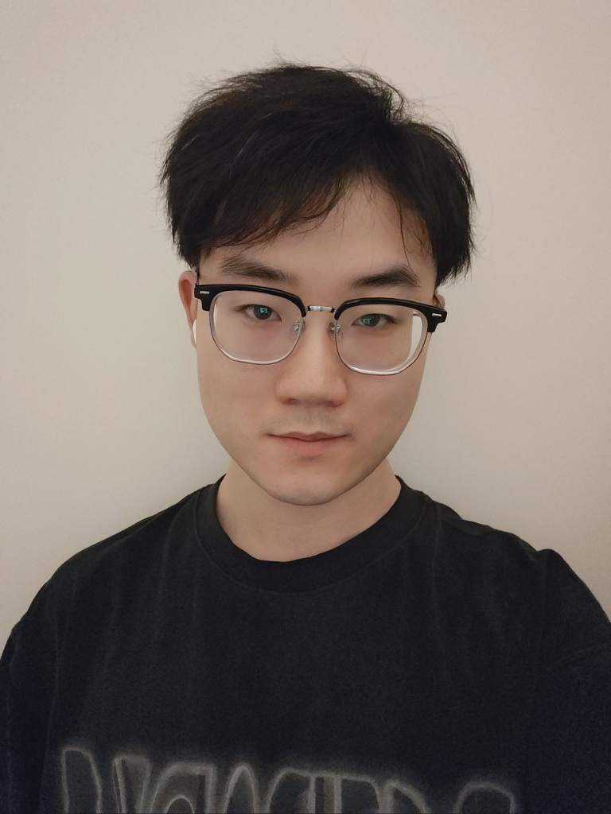
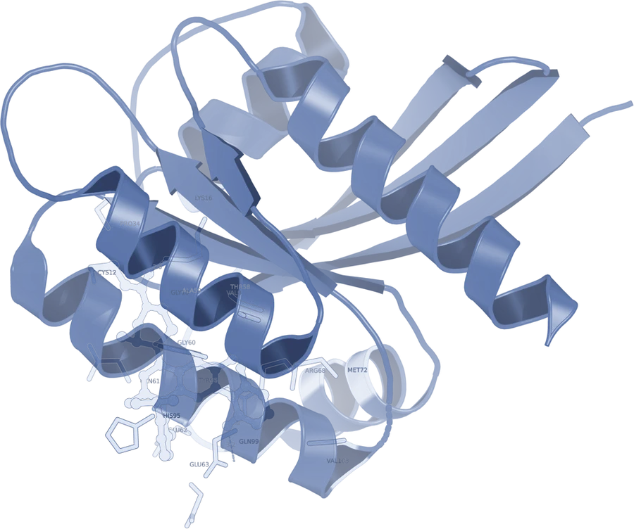

SC '26
Quantum Sampling Architecture for Protein Structure Reconstruction on Utility-Scale Hardware
The International Conference for High Performance Computing, Networking, Storage, and Analysis (SC), 2026

Quantum algorithms and systems for biology, run on real quantum hardware.
PhD Student in Quantum Biological Computing
Kent State University & Cleveland Clinic
I am a PhD student in quantum biological computing, advised by Dr. Qiang Guan at Kent State University and Dr. Feixiong Cheng at Cleveland Clinic. My main research area is quantum computing, including algorithms, architectures, and systems, and I apply it to problems in structural biology and drug discovery.
Most of my projects start from a concrete task, such as predicting the structure of a peptide in a binding pocket, and ask what today's quantum processors can actually contribute to it. My work has run on IBM utility-scale quantum hardware, including the IBM quantum processor at Cleveland Clinic.
My research aims to understand and design quantum computing methods that turn the physical properties of quantum systems into programmable, scalable, and verifiable information processing, building a new physical intelligence layer for biological information systems and drug discovery.
Quantum hardware
Physical properties of quantum systems
Physical intelligence layer
Programmable, scalable, verifiable

Biology & drug discovery
Biological information systems
First-author papers. * denotes corresponding author. See Google Scholar for the full list.
The International Conference for High Performance Computing, Networking, Storage, and Analysis (SC), 2026
ACM Transactions on Quantum Computing, 2026
Advanced Science, 2025
The International Conference for High Performance Computing, Networking, Storage, and Analysis (SC), 2025
arXiv preprint, 2026
NSF I-Corps for Quantum+X
I-Corps: Translation Potential of a Hybrid Quantum-Classical Drug Discovery Platform
Quantum Computing User Forum (QCUF) 2025
Oak Ridge National Laboratory, Oak Ridge, Tennessee
I thank my advisor Dr. Qiang Guan, my co-advisor Dr. Feixiong Cheng, and my mentors Dr. Juan Yao, Dr. Zhaofeng Su, Dr. Sanjiang Li and Dr. Yuan Feng. Thanks also to the 419 Lab team, and to my friend Haojie Zhang, who first got me interested in quantum computing.